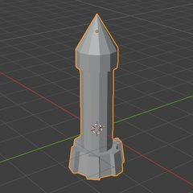

Blender для Unity
Уроки 3D-моделювання курсу Robocode · Blender 5.2. Кожен урок — коротке пояснення інструментів і покрокові відео: дивись, зупиняй, повторюй у своєму Blender.

4Перші кроки
Інтерфейс, переміщення, обертання, масштаб, витягування. Колона, стілець, монітор, торт, колесо, ракета.

5Більше інструментів
Inset, Bevel, Knife, Proportional Editing. Гриб, арка, дерево, чоловічок і великий космічний корабель.

6Модифікатори і референси
Mirror, модифікатори, картинки-референси. Кіт-робот за кресленням спереду і збоку.
Як дивитися відео: Пробіл — пауза, ← / → — крок назад / вперед, швидкість 0.5–1.5×. Потрібно, щоб відео чекало після кожного кроку, — постав галочку «зупинятися після кроку». Корабель уроку 5 має ще й покрокову інструкцію з картинками.